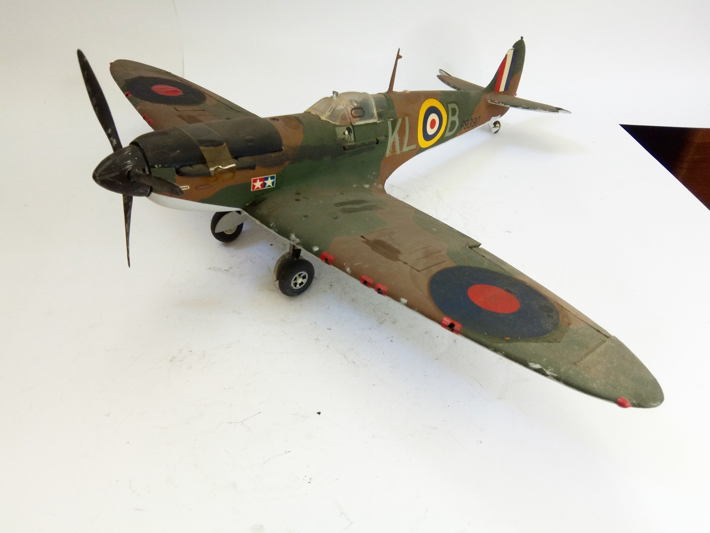
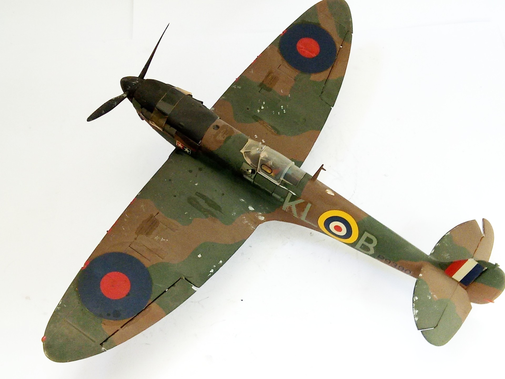
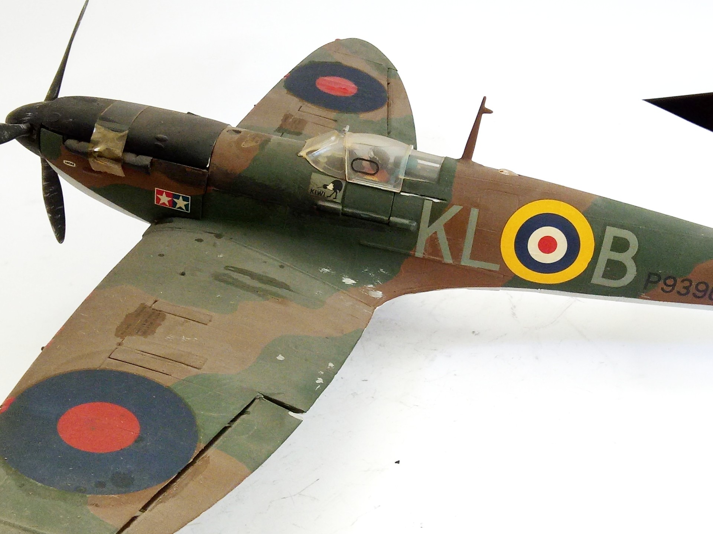

Aerei · scale model archive
Supermarine Spitfire Mk1b
Supermarine Spitfire Mk1b — Kit: Airfix, Scale: 1/24. First kit in a very big scale for that time, It was an event for the modellers`community Model by…

Photo gallery


English description
First kit in a very big scale for that time, It was an event for the modellers`community
Model by Franco Donati
#1/24 #Airfix
Descrizione italiana
Primo kit in una very grande scala per l’epoca, It fu una event per il modellolers'community.
Modello di Franco Donati.